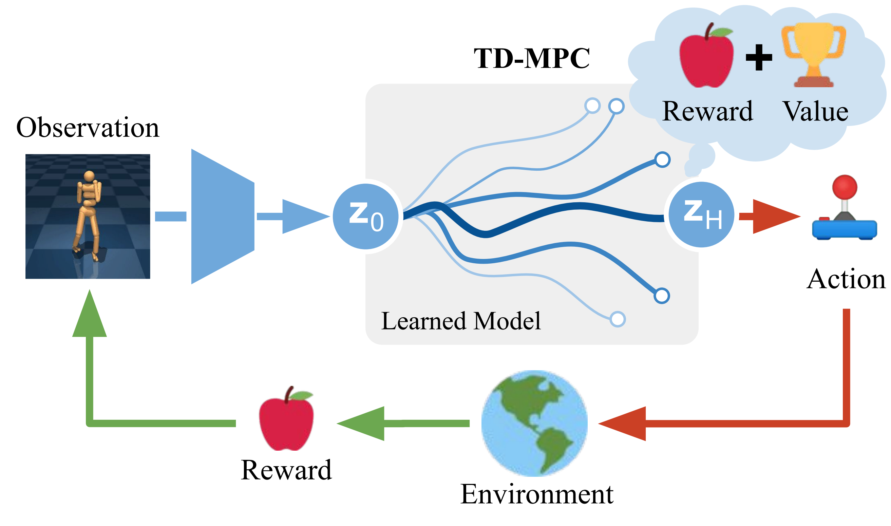
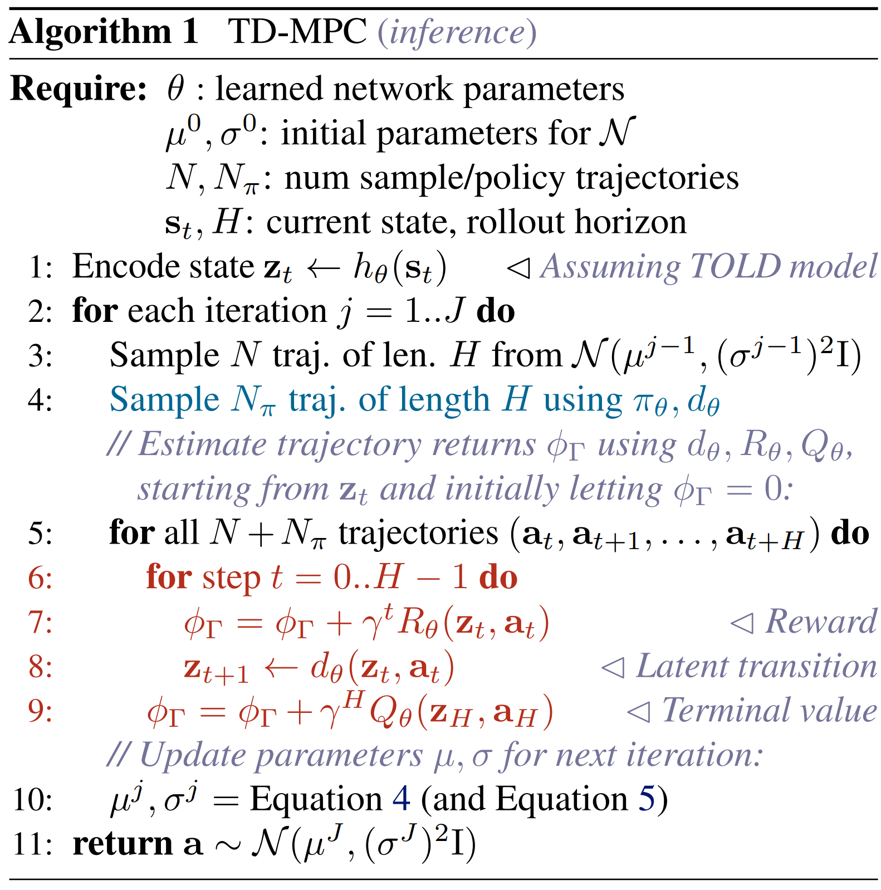
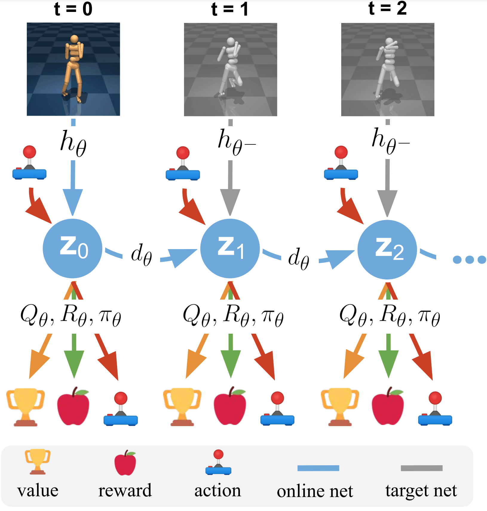
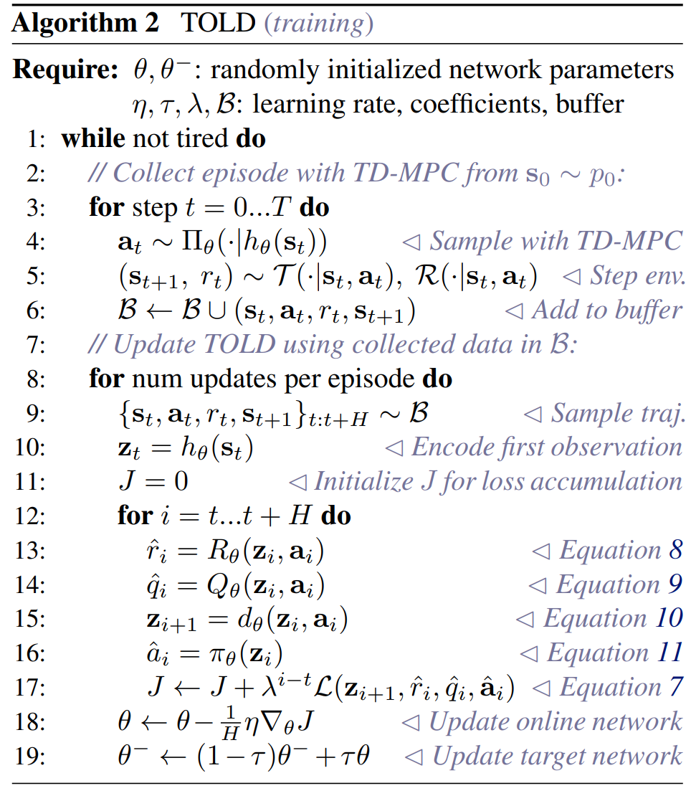
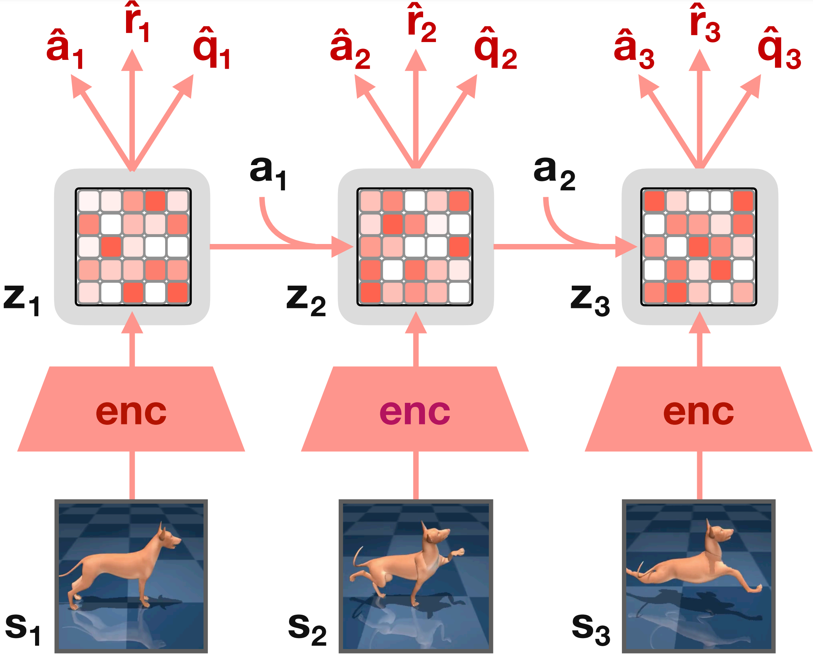

TD-MPC adapts MPPI as inference algorithm, where action trajectory is sampled from a time-dependent multivariate Gaussian with diagonal covariance over a horizon of length H
{N(μτ,στ2)}τ=0H⇐μτ,στ∈R∣A∣
Sample N trajectories indepedently using rollouts generated by the learned environment model, and estimate the total return of trajectories with learned value function
where trajectories are weighted by corresponding returns as Ωi=exp(κϕi)=exp(κϕ(at:t+H(i))), κ is a temperature parameter controlling the “sharpness” of the weighting.

After a fixed number of iterations J, the action of current decision step t is sampled from N(μ0,σ02) to be taken.

Parameter Initialization
To reduce the number of iterations required for convergence, TD-MPC reuses the 1-step shifted mean value μτ obtained at the previous step, but always use a large initial variance to avoid local minima.
Exploration by Planning
To promote consistent exploration, TD-MPC constrains the std. deviation by updating as
where ϵ∈R+ is a linearly decayed constant. Likewise, the planning horizon is increased linearly from 1 to H in the early stages of training as the model is initially inaccurate.
Policy-guided Trajectory Optimization
TD-MPC augments the sampling procedure with additional Nπ samples from learned policy πθ.
Task-Oriented Latent Dynamics（TOLD）
TD-MPC leverages the following components of TOLD model during inferene：
Components
Definition
representation
z^t=hθ(st)
latent dynamics
z^t′=dθ(zt,at)
reward
r^t=Rθ(zt,at)
value
q^t=Qθ(zt,at)
policy
a^t=πθ(zt)
TOLD model is trained to minimize a temporally weighted objective
θminJ(θ;Γ)=τ=t∑t+Hλτ−tL(θ;Γτ)
where Γ={(sτ,aτ,rτ,sτ+1)}τ=tt+H∼B is a trajectory sampled from replay buffer B, which consists of interaction data collected by TD-MPC during planning. A single-step loss is made up of
where θ− is parameter of target net to improve the stability during training.


TD-MPC v2
TD-MPC v2 uses a learnable task embedding e (constrained by ∥e∥2≤1) to represent compact task semantics. For a new task, e can be initialized as the embedding of a semantically similar task for subsequent fine-tune
Components
Definition
encoder
z^t=hθ(st,e)
latent dynamics
z^t′=dθ(zt,at,e)
reward (discrete)
r^t=Rθ(zt,at,e)
terminal value (discrete)
q^t=Qθ(zt,at,e)
policy prior
a^t=πθ(zt,e)
The latent representatino is normalized by SimNorm (project z into L fixed-dimensional simplices via softmax)
z∘=[g1,g2,⋯,gL]gi=softmaxτ(zi:i+V)
which can naturally bias the representation towards sparsity without enforcing hard constraints.

The h,d,R,Q components are jointly optimized to minimize the model objective under a replay buffer B
To accelerate convergence of planning, a fraction of action sequences originate from the policy prior is used for data augment, and 1-step shifted parameter initialization is used to warm-start planning